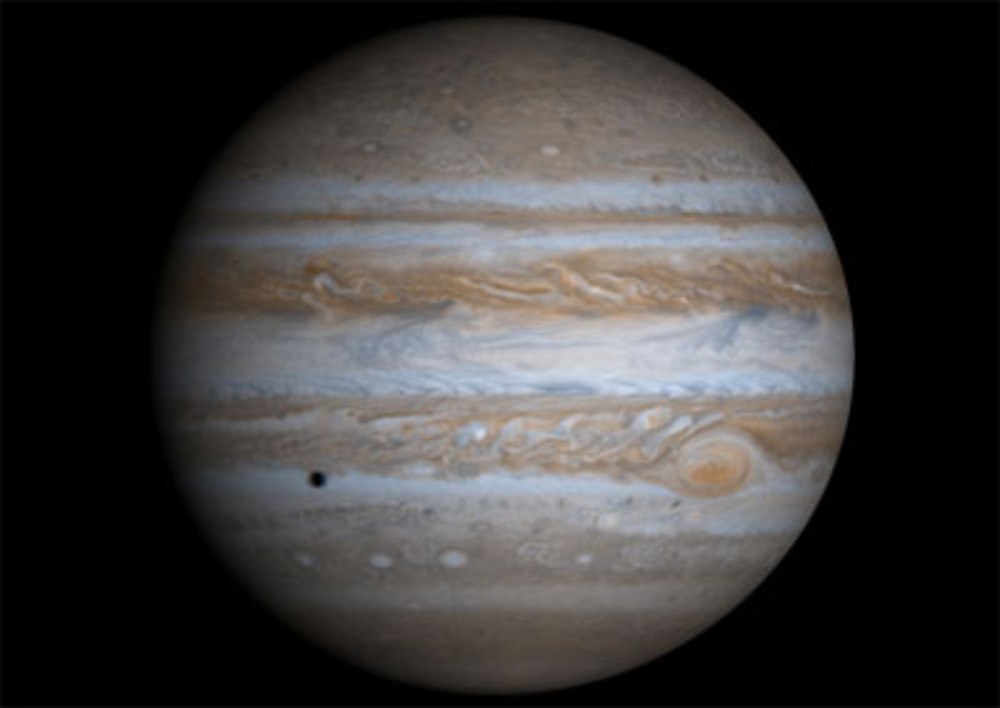
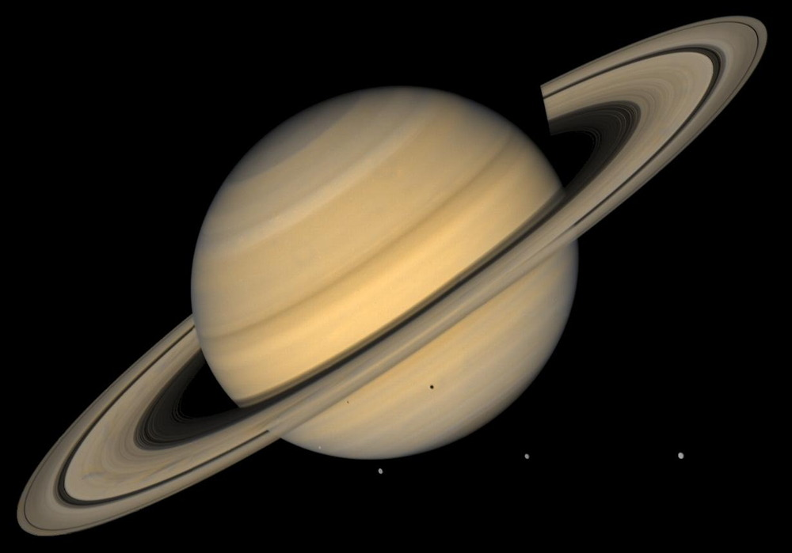
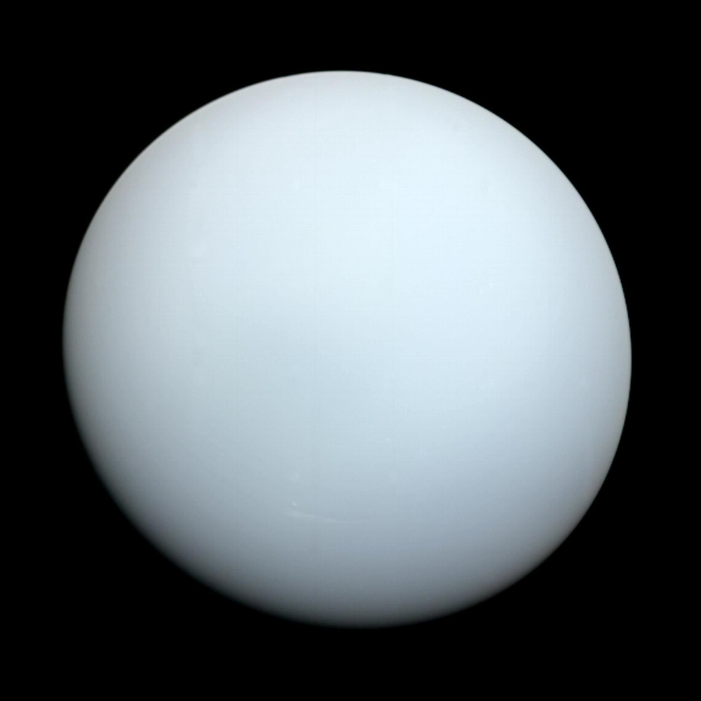
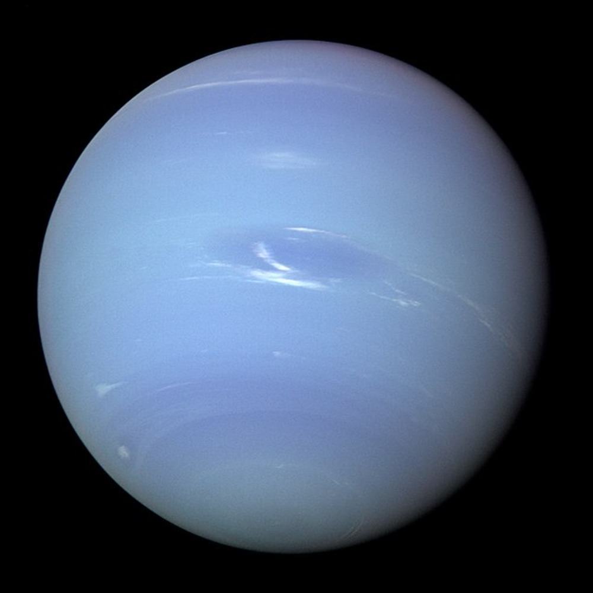

| Jupiter |
Saturn |
Uranus |
neptune |
| 
| 
| 
| 
|
| planet |
Mass 1024kg |
Diameter km |
Mean Tempature |
Length of Day |
Moons |
Distance from Sun 106 km |
Orbital velocity km/s |
| Jupiter |
1898 |
142,984 |
-110 |
9.9 hours |
79 |
778.5 |
13.1 |
| Saturn |
568 |
120,546 |
-140 |
10.7 |
82 |
1,432 |
9.7 |
| Uranus |
86.8 |
51,118 |
-195 |
17.2 |
27 |
2,867.0 |
5.4 |
| Neptune |
102 |
49,528 |
-200 |
16.1 |
14 |
4,515 |
4.7 |
Fun Facts
- All of the 4 Gas Giants in our solar system have rings, even uranus's wich is compused of millimeter thick rocks
- all gas giants have veery complex atmospheres, neptuneswinds spead breaks its speed of sound
- Neptune and Uranus are also refered too as Ice gaints as they are also compused of heavy unstable zubstance that are solid at -190 degrees celcuis